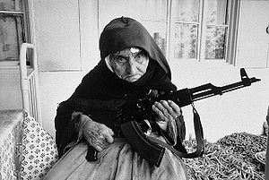

Idioma Mundial
 De: La Frikipedia, la enciclopedia extremadamente seria.
De: La Frikipedia, la enciclopedia extremadamente seria.

|
PELIGRO
Este artículo o sección no es más que una torpe lista. Si crees que vale la pena, edítalo para mejorar su calidad y excelencia
|
El Idioma Mundial (Idioma Mundial: Die Carallosprachen [ðje kaɾa'jos.praχen]) fue el primer intento exitoso de establecer un nuevo idioma apto para la comunicación en todo el globo, tras la basura del Esperanto o el intento de Jose María Aznar de que todo el mundo hablara tejano.
Acto de creación del idioma Mundial
El Idioma Mundial fue definido por un prestigioso congreso de filólogos de la Universidad de Gotemburgo, la Universidad de Georgetown y la Universidad de El Burgo Ranero en el "Primeiro Kongress von definizione von die Carallosprachen pa das monde enteiro" celebrado en 1996 en O Cebreiro, reino de Galiza, basándose en las particularidades dialectales de cinco insignes próceres del campo de la lingüística, en su mayor parte gallegos: José Tojeiro Díaz, Manuel Fraga Iribarne, Mariano Rajoy Brey, Arnold Schwarzenegger y Chiquito de la Calzada.
Características
Idioma Mundial aplicado al ámbito de la medicina
El Idioma Mundial se basa en lo único que une a los pueblos del mundo: El reírse de la gente que habla raro.
Por eso, se escogieron las palabras mas cómicas de cada idioma mayoritario (Por ejemplo el italiano "pompieri" frente al portugués "bombeiros" o el inglés "fireman")
adoptando como base la gramática y gran cantidad del idioma más risible del mundo: El Gallego.
Obviamente esta decisión no estuvo exenta de controversia y el líder del BNG, Anxo Quintana se inmoló frente al edificio quemándose a lo bonzo, decisión muy aplaudida por el resto de la humanidad. En la actualidad es sustituido por un robot fabricado por la misma compañía que fabricó la réplica de Jordi Hurtado.
Así, se establecieron una serie de normas de obligatorio cumplimiento:
- En caso de duda se recurrirá siempre a la forma galaica.
- La pronunciación se regirá por la forma galaica o española si en el idioma original fuera menos risible. Por ejemplo "Amanida de pollastre" se pronunciará tal y como lo leería un vecino de Majadahonda, no "Amanida de pullastra", cosa que los valencianos tienen harto fácil. El acento también será el gallego, preferiblemente con gheada.
- El artículo será siempre basado en el alemán, salvo para gilipolleces muy gordas donde se deberá emplear el frances "le"
- Será obligatorio el uso de verbos extraños, giros rebuscados y demás tronchantes manifestaciones idiomáticas que nos hagan parecer un pedante apabullante. En estos casos tienen preferencia las expresiones anglosajonas: "Furthermore", "Whatsoever", "Indeed" y demás prosapia serán imprescindibles.
- Se adoptará una palabra comodín para mayor comodidad del hablante. Debido a que el único idioma que presenta esta curiosa particularidad gramatical es el gallego, se utilizará "carallo" sistemáticamente. Así, "libro de resguardo de albaranes de mensajería" se dirá "carallo". Los reintegratas podrán utilizar "caralho" a voluntad.
- La gente se saludará con un “salam maricón” y se despedirá con un “sayonara baby baby baby baby”.
- Todas las aportaciones de Chiquito de la Calzada serán pilares indiscutibles del idioma mundial, y ni siquiera términos italianos podrán desplazarlas. Sólo el hablar de Antonio Ozores podrá complementar las lagunas dejadas por Chiquito.
- Se utilizará la sonorización de los signos de puntuación en "-ho" típica del asturiano. Será cuasi obligatorio su uso.
Ejemplos de utilidad
Cultivado hablante del Idioma Mundial
Lección primera: En el Restaurante // Primeira Lektion: Aus le Ravintola (Primeira Lektión: Aus le rrabintola)
- Yogur de piña
- Quiero una pechuga de pollo asada con mostaza y un vaso de vino tinto.
- Vull ein piept de pui la grătar amb mustarda eta ein gwydr de ardo mouro, te dá cuen, ho?
- Buyáin piep de puí la jratar am mustarda etáin güidrr dardo mouro, te da kuen ooo?
- Disculpame, querida, pero realmente necesito ir al servicio
- Carallo, verzeihen, mein lieben, pero io truly tenho a necessidade d'anar ao mexadoiro jarl!
- Karayo, fa'tseijen, mainliben, pero íiio trali teño a nezesidade danar ao meshadoiro jarl
- Buenos días, ¿podría indicarme un restaurante por aquí cerca, por favor?
- Salam maricón, ho!. Could you indicare ein ravintola in the rodiada, s'il vous plaît?
- Salamaricón oooo. Kulz yu indicare ain rrabintola in de rodiá, silbuplé?
- Señor camarero, estas servilletas de papel son una basura, le apuñalaré con un destornillador en el ojo si no me trae unas de tela
- Signore camareiro, questi guardanapos sunt unha garbage, ho. Io will poignarder vous amb un tornaparafuso in el güeyu if du nein bring me altri de ţesătură, por la gloria de mi madrerl.
- Siñore kamareiro, kuesti juardanapos sún úa garbeitch oooo. Íiiio güil puñardé bfú am un tornaparafuso in el güeyu if du nain brinmi altri de tsesaturá, por la gloria de mi madrerl.
Lección segunda: De ligoteo // Bigarren Lektion: Flirting (Bigárren Lektión: Fláirtin)
- Hola chati, ¿bailas?
- Kalimera, rapariga, dance vous, ho?
- Kalimera, rrapariga, dansé bfú, oooo?
- Dime quién es tu ginecólogo, que corro ahora a chuparle el dedo.
- Esadazu who ist il tuo frauenarzt, que io drejtuar now a suck il suo fingur, ho!
- Esadassu jú ist il túo frauenartst, que íiio drejtúar nau a sákil súo fingur, oooo!
- Señorita, mis intenciones son castas y puras como el agua cristalina de la fuente de Lanjarón
- Signorina, las meuas intençãoes sunt keusch und puruak like le augua krystallinske of die ffynhonnell de Lanjarão
- Siñorina, las meuas intendsoes sunt koish und purúak laik le aujua kristal-linske of die funjónel de landsharao.
- Me gustaría entrarle a esa churri
- Ich voglio ingang a questa rapariga.
- Ij vollo ingán a kuesta raparija.
Lección tercera: En el autobús // Üçüncü Lektion: Aus das otobus (Ichinki lektión: Aus das otobús)
- ¿¡Cómo que el billete ha subido cincuenta céntimos?! ¡Esto es un crimen!
- Ma commo que das lippu a augmenté fünfzig stotinki, ho!? Carallo, questo ist a felony!
- Ma com-mo que das lip-pu a aumenté finftsik estotinki, oooo? Carayo, kuesto ist a félonai.
- Señora, le agradecería que retirara su bolsa de la compra de mi escroto
- Signorina, eu will be muito obrigado than zurückziehen la seba bursa von das cumpărături from mein escroto.
- Siñorina, éu güilbi muito obrigadu dan tsurriktsijen la seba bursa fon das kumparaturi from main escroto.
- Perdone, ¿esta es la parada del centro comercial?
- Entschuldigung, questa e a paradeira of das centrul comerciale, ho?
- Enchúldigun, kuesta é a paradeira of das zentrul comerchiale ooo?
 La población mas mayor aún se muestra reticente a la utilización del Idioma Mundial. En la Imagen, Domitila Karadžić, quién profirió en serbocroata unas palabras muy feas
Lección Cuarta: Palabras ofensivas // Patrulea lektion: Parole nastuplenie (Patruléa lektión: Parole nastupleñe)
- Nenormal von das rumpelkasten
- Nenormal fon das rrumpalkasten
- Pedazo de estúpido, lombriz fecal del truño de un buey
- Pedaço of stupid, miñoca fekal von die moñica of an ox
- Pedadsu of estíupid, miñoca fekal fon die moñica of an oks.
Further Informazione
Inspiración de este artículo
Autor(es):
- Doctor grijander
- Genericool
- Thate
- V for Vendetta
- Luxi
Frikipedia 2005-2016, Licencia
GFDL 1.2 - Extraído por FrikiLeaks